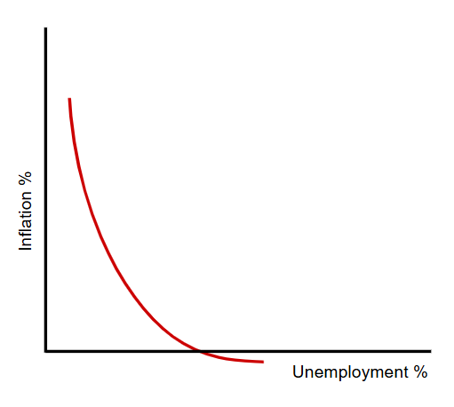
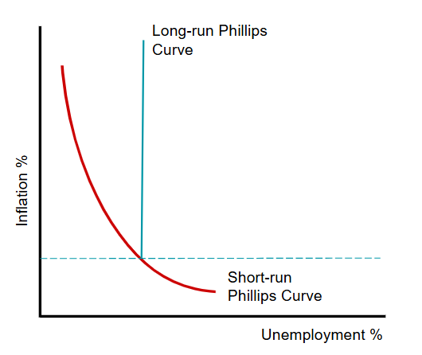

The internal value of a country's currency will fall as a result of inflation. Each unit of the currency will buy less in the domestic market. If the rise of its inflation is above that of rival countries, demand for its products will fall. As a result, demand for a country's currency will fall as foreigners buy fewer of the country's export, and the supply of the currency on the foreign exchange market will rise as more imports are purchased. The reduced demand and higher supply of foreign currency will cause a depreciation.
A change in the external value of the currency (the exchange rate) will affect the internal purchasing power of a country's money. A fall in the exchange rate will raise the price of a country's imports, which reduces the value of the country's money. Puchasing power may also be reduced as a result of the increase in the price of imported raw materials and reduction in competitve pressure, driving up the prices of domestically produced products.
The internal and external values of a country's money tend to be directly related, with a fall in the internal value leading to a fall in the external value and vice versa.
If a country's inflation rate rises above that of its main competitors, its price competitiveness will fall. Export revenue will decline while import expenditure rises and the current account balance will deteriorate.
An increase in a current account surplus may cause inflation as it will mean exports are making an increasing contribution to aggregate demand and more money will be flowing into the country than leaving it.
However, an increasing surplus may cause a rise in the exchange rate. This appreciation may reduce the surplus and tend to reduce the inflation rate as the price on imported products fall and there will be more pressure on domestic firms to keep their prices low.
A net inflow on the financial account may reduce a country;s inflation rate if multinational companies bring in advance technology and increase competitiveness pressure within the economy.
A high inflation rate is likely to reduce a country's economic growth rate.
The effect of economic growth on inflation is more uncertain. A rise in actual economic growth may be accompanied by cost-push or demand-pull inflation. As more is produced, there will be more competition for resources, including workers, which will riae their price. Higher output also increases income and so aggregate demand.
However, potential economic growth can reduce inflation. It enables aggregate demand to increase without pushing up the price level and it can reduce the costs of production. For instance, advances in technology can enable higher output to be produced per factor input.
Economic growth can be export-led.
Higher net exports will cause a multiple increase in GDP. In this case, economic growth will be accompanied by an improvement in the current account of the balance of payments. If there is potential economic growth, the price competitiveness and quality competitiveness of the country's products could increase.
However, there is a possibility of an inverse relationship at least in the short run. Firms may purchase raw materials and capital goods from other countries in order to produce a higher output.
For instance, Singapore has experienced significant increases in their national income as a result of a rise in exports.

A fall in unemployment may cause higher inflation due to extra aggregate demand and the possible upward pressure on wages.
This graph shows the Phillips curve, which in downwards sloping from left to right. It is steeper at high rates of inflation, indicating that a fall from a very low unemployment rate to an even lower rate will result in a significant rise in inflation rate. The curve becomes much flatter as unemployment increases, indicating that reducing unemployment from a very high rate may not have much impact on the price level and a very high rate of unemployment may be accompanied by deflation.
A traditional Phillips curve also sugguests that a government can select its best combination of unemployment and inflation and can trade off the two.
The traditional Phillip curve will shift to the right if the rate of inflation associated with unemployment rate increases. For example, if workers hold out for higher wages because they expect inflation will be higher or becaue workers become less skilled. Improvements on the supply-side of the economy will shift the curve to the left.

The traditional Phillips curve is supported by Keynesians but is questioned by monetarists. Monetarists argue that, while there may be a short-run trade off, in the long run government policy tools to increase aggregate demand will have no impact on unemployment but will only succeed in raising the inflation rate.
To support this view, the expectations-augmented Phillips curve was developed as shown by the vertical long run phillips curve in this graph. The position of this curve is determined by the natural rate of unemployment.
Phillips Curve: a curve that shows the relationship between the unemployment rate and the inflation rate over a period of time.
Expectations-augmented Phillips Curve: a diagram that shows that while there may be a trade-off betweeen unemployment and inflation in the short run, there is no trade-off in the long run.